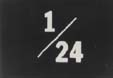
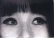

presents
films by
Takahiko Iimura


Eiga Arts celebrates its new location with the work of Takahiko Iimura. Iimura will be at Eiga Arts to show his work and meet people afterwards.
Iimura is an artist of international reputation. He is regarded as one of the founders of the Japanese avant-garde and an essential member of the New York art scene since the 1960s. His work ranges from film and video to installations and CDROM based media and has been collected and exhibited by major art museums worldwide. Since 1991, he has been a Professor at Nagoya University of Art and Design.
The programme will begin at 7.30pm and last about two hours with a small party to follow. Doors open at 7pm.
Programme
Ai (Love) (1962-3, 16mm, 12mins)
"Close-ups of a male and a female body during lovemaking are photographed in such a way that we are frequently unsure which particular portion of which body we are seeing." Soundtrack by Yoko Ono. (Scott MacDonald)
24 frames per second (1975-8, 16mm, 12mins)
"Both in terms of its examination of time and space, of light and darkness, of visuals and sounds; and in terms of its demands and potential rewards for an audience...[24fps] is a quintessential Iimura film." (Scott MacDonald)
MA: Space/Time In The Garden of Ryoan-ji (1989, 16mm, 16mins)
"...simultaneously a fine introduction to a classic Japanese garden and the concept of MA, and to the central dimensions of Iimura's earlier work." (Scott MacDonald)
Moments At The Rock (1985, videotape, 11mins)
"Very alluring...The pace of the images and sounds become hypnotic and creates a sense of 'dream time,' something basic to the Aboriginal monument itself." (Carl E. Loeffler)
Observer/Observed Trilogy (1975-6, Revised in 1998, videotape, 22mins)
Collected video semiology exploring the relationship between language and video (camera, monitor, frame and identity)
New York Hot Springs (1984, videotape, 10mins)
"In Japan, hot springs are a high art form. To translate this to New York is a supreme Dada gesture." (Loeffler)
A.I.U.E.O.NN SIX FEATURES (1993, videotape, 3mins)
"Using Japanese vowels, 'A I U E O' and an extra 'NN', six funny faces which are manipulated by a computer programme called 'System G', synchronize with the voice." (Iimura)
"From the early sixties, though Japanese, Iimura was well known as one of the first generation of the New York Underground - for many years, Japanese experimental film was Takahiko Iimura." (Programme notes by Malcolm Le Grice for Iimura retrospective, The LUX Centre, London, 1998.)
"Iimura's work has continued to open up new ground...he is a significant and singular film maker but also one of the most important conceptual artists working in any medium. (Le Grice, 1975.)
"Iimura Takahiko is not an ordinary artist. He is undoubtedly one of the first, along with Yoko Ono and Ryuichi Sakamoto to gain substantial international reputation." (Carl Eugene Loeffler, Media Critic, San Francisco).
"Although Takahiko Iimura was, and continues to be, an active part of the New York avant-garde scene, he always remained an enigmatic, mysterious presence, pursuing his own unique route through the very center of the avant-garde cinema...he explored this direction of cinema in greater depth than anyone else...[Seeing his work] is an important occasion for all concerned with the development and pleasures of cinema as an art." (Jonas Mekas).
"One of the foremost video and film artists in the world" (Studio 200 Exhibition programme notes, 1991).
"...on the border of fine art and audio-visual expression." (Yusuke Nakahara, 1991).
For more information on Iimura, go to: http://www2.gol.com/users/iimura/Front.html
June 26th
Gallery Yuu, Shirayama, Saga city
7.30pm